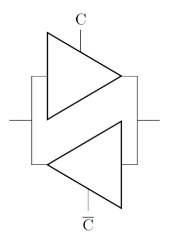
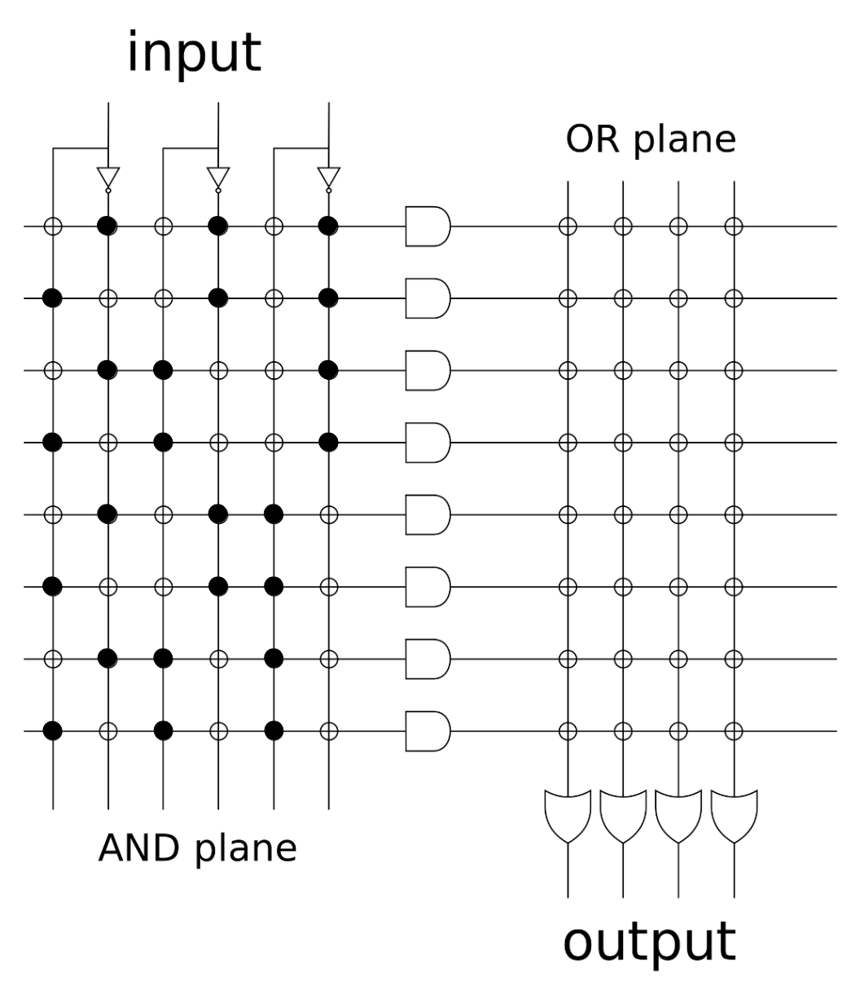
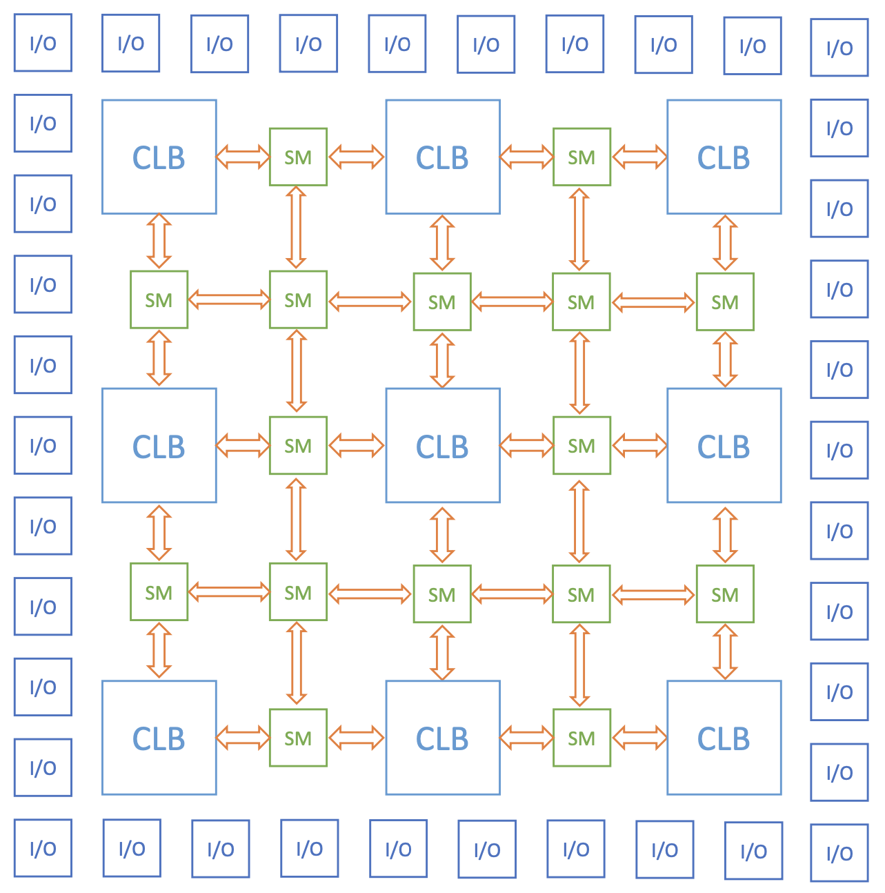

5 Combinatorial circuits
We will see below the main circuits called combinatorial, in the sense that their operation concerns only the relationship between the input and output of the signal from the circuits themselves described by logic functions.
5.1 Adder
5.1.1 Half-adder
Our goal is to create a circuit capable of adding two numbers together. Since logic circuits work through HIGH and LOW signals, the first thing we can do is try to add two bits together, or - in other words - two single-digit binary numbers.
If both bits are \(0\) (\(A=B=0\)) the result will obviously be zero, while if one is \(0\) and the other is \(1\) (\(A\oplus B=1\)) the result will be \(1\); the last case is \(A=B=1\), where the result is \(10\): it therefore requires two bits in output, for which we will have to use in general two bits (that is, two variables containing the information) to perform this simple sum considering all cases.
The truth table will be as follows:
The variable \(S\) contains what we indicate as the sum; the variable \(C\), instead, is called , and indicates what is the carry of an addition in column: in the first three cases the variable \(S\) coincides with the actual sum of \(A\) and \(B\), while in the last case the sum gives rise to a carry that is stored in the variable \(C\).
From table [tab:circuiti-combinatori-half-adder] we immediately understand which operations are needed to obtain the two output variables:
\[ \begin{aligned} &S=A\oplus B\\ &C=AB \end{aligned} \]
Converting this into a circuit we get:
This circuit alone does not allow us to add numbers with more than one bit; let’s try, for example, to perform the addition between \(111\) and \(101\):
The sum - as we know1 - proceeds from right to left. We will first add \(1\) with \(1\) which we know gives \(10\), that is a \(0\) with a carry of \(1\); now the problem is: how do we proceed with the addition? The next sum, in fact, would be \(1+0\), but we cannot ignore the carry, since otherwise we would erroneously write \(1\) as the result according to the circuit just described. The solution, therefore, is to introduce a new circuit that takes into account not two bits, but three bits, that is the two bits to be added and the carry. For this reason we call the circuit just described , not being yet the version of what interests us.
5.1.2 Full-adder
Let’s go back to the example just made: in that case the solution is obviously \(1\) which, with the carry equal to \(1\) to be added, becomes \(10\); since the sum continues further, we take \(0\) as the result and the new carry will have a value of \(1\).
With the same logic we can build a new truth table, where we indicate with \(C_i\) the carry contemplated in the sum between \(A\) and \(B\) and with \(C_{i+1}\) the carry of the next sum:
Let’s calculate \(S\) using minterms:
\[ \begin{aligned} S&=A\bar{B}\overbar{C_i}+\bar{A}B\overbar{C_i}+\bar{A}\bar{B}C_i+ABC_i=\\ &=\left(A\bar{B}+\bar{A}B\right)\overbar{C_i}+\left(\bar{A}\bar{B}+AB\right)C_i=(A\oplus B)\overbar{C_i}+(\overbar{A\oplus B})C_i=\\ &=\left(A\oplus B\right)\oplus C \end{aligned} \]
Similarly for \(C_{i+1}\):
\[ C_{i+1}=AB\overbar{C_i}+A\bar{B}C_i+\bar{A}BC_i+ABC_i \]
For the property we can add \(ABC_i\) twice:
\[ \begin{aligned} C_{i+1}&=AB\overbar{C_i}+A\bar{B}C_i+\bar{A}BC_i+ABC_i+ABC_i+ABC_i=\\ &=AB\left(\overbar{C_i}+C_i\right)+AC_i\left(\bar{B}+B\right)+BC_i\left(\bar{A}+A\right)=\\ &=AB+AC_i+BC_i \end{aligned} \]
Let’s convert everything into a circuit:
This is the useful circuit for our purposes, that is for the sum of numbers with more than one bit: for this reason it is called .
The sum between the numbers \(111\) and \(101\) will be performed as follows:
and in fact \(111+101=1100\).
The general scheme of the adder, therefore, is the following:2
5.2 Subtractor
To obtain the difference between two binary numbers we follow the same reasoning as for the adder. Let’s start by building the truth table for a subtraction between two bits: when both are equal to \(0\) or \(1\) the result will be \(0\), while when the minuend is \(1\) and the subtrahend is \(0\) the result will be \(1\); the remaining case is the minuend equal to \(0\) and the subtrahend equal to \(1\), or in other words the subtraction \(0-1\): in the context of subtraction with more bits we need the result to be \(1\) while at the same time recording a borrow (also equal to \(1\)) that is subtracted from the next minuend along with its subtrahend.
Indicating the borrow with \(R\) and the difference with \(D\) we will have:
From which it follows:
\[ \begin{aligned} &D=A\oplus B\\ &R=\bar{A}B \end{aligned} \]
Let’s now try to build the full-subtractor table, remembering that \(R_i\) is simply another bit to be subtracted from \(A\) in addition to \(B\):
We note that the variable \(D\) assumes the same values as \(S\) in the full-adder table (table [tab:circuiti-combinatori-full-adder-tabella]), so its algebraic expression will also be the same:
\[ D=(A\oplus B)\oplus R_i \]
Finally, let’s calculate \(R_{i+1}\):
\[ R_{i+1}=\bar{A}B\overbar{R_i}+\bar{A}\bar{B}R_i+\bar{A}BR_i+ABR_i \]
Let’s add \(\bar{A}BR_i\) twice:
\[ \begin{aligned} R_{i+1}&=\bar{A}B\overbar{R_i}+\bar{A}\bar{B}R_i+\bar{A}BR_i+ABR_i+\bar{A}BR_i+\bar{A}BR_i=\\ &=\bar{A}B\left(R_i+\overbar{R_i}\right)+\bar{A}R_i\left(B+\bar{B}\right)+BR_i\left(A+\bar{A}\right)=\\ &=\bar{A}B+\bar{A}R_i+BR_i \end{aligned} \]
By putting a half-subtractor in a row and then the various full-subtractors it is possible to obtain a real multi-bit subtractor, exactly as in the case of the adder.
5.2.1 Two’s complement
Building two different circuits for sum and difference can be expensive and inefficient: is there a way to build a circuit capable of performing both operations?
A first idea is to take the full-subtractor circuit seen in figure [fig:circuiti-combinatori-full-subtractor-circuito] and replace the NAND that inverts the signal of \(A\) with a XOR, which takes as input the signal of \(A\) and another signal that we indicate with \(S/D\): if we want to perform the sum we set \(S/D\) LOW, so that
\[ A\oplus0=A \]
and therefore we get back figure [fig:circuiti-combinatori-full-adder-circuito]; if our goal is the difference then we set \(S/D\) HIGH obtaining
\[ A\oplus1=\bar{A} \]
and therefore the full-subtractor circuit.
Another idea is to use only full-adders using the , which is a representation of binary numbers useful for defining positive and negative numbers. The two’s complement of an \(n\)-bit number is obtained by inverting all its bits (so the \(0\)s into \(1\)s and the \(1\)s into \(0\)s) and adding \(1\) to the total; for example, the 2’s complement of \(A=1011\) will be \(A'=0100+1=0101\). The reason why this representation is useful is that by performing the two’s complement of the same number twice we get the starting number, in fact:
\[ A''=1010+1=1011=A \]
If performing an operation on a number twice returns the starting number then we can understand this operation as a change of sign, since by inverting the sign of a number twice you get the starting one.
Let’s now imagine working with \(4\)-bit numbers; starting from the number 0 (\(0000\)) we add 1 obtaining \(0001\) whose two’s complement is \(1111\), which will correspond to -1, and we continue like this until we get to \(0111\), which corresponds to 7, and to its two’s complement which is \(1001\): it is evident, therefore, that the first bit will represent the sign of the number, which is \(0\) for positive numbers and \(1\) for negative numbers; according to this reasoning, the last missing digit, that is \(1000\), is negative and represents, therefore, -8.
In general, an \(n\)-digit binary number can represent the numbers between \(-2^{n-1}\) and \(2^{n-1}-1\).
According to this representation we can think of the difference of two numbers as the sum of a positive number and a negative number. This means that we can use only adders in the following way:
When you want to use the adder you set SUB\(=0\) so that the bits of \(B\) are not inverted and the carry of the first full-adder is set to \(0\), making it in all respects a half-adder. When you want to switch to a subtractor you must set SUB\(=1\) so that each bit of \(B\) is complemented and the carry on the first full-adder is set to \(1\) by default: in this way we will go from \(B\) to \(\bar{B}+1=B'\) and we will get the difference between the numbers in binary.
Keep in mind that for a circuit with four full-adders, which therefore considers four-bit numbers, the digits that represent the number in modulus are only the last three, since the first is relative only to the sign: this means that it is possible to operate only with numbers ranging from \(-8\) to \(7\).
Furthermore, depending on the sum (or difference) performed, the last carry can:3
Have no meaning if the result \(x\) is a number expressible within three bits (\(\abs{x}\leqslant7\))
Indicate the sign of the resulting number \(x\) if it is a number expressible with four bits (\(7\leqslant\abs{x}\leqslant15\))
Indicate the first digit of the binary number in modulus if the numbers added or subtracted are both \(1000\), that is \(-8\) (in both cases, in fact, the result will give \(10000\), that is \(16\) in binary)
Let’s see an example of the difference between \(3\) and \(7\): we know that the number \(3\) in binary with four bits is \(0011\), while \(7\) is \(0111\), so we will have
The number 1100, in two’s complement notation, represents exactly \(-4\).
5.2.2 Parallel carry
One last consideration to make concerns the efficiency of the circuit: in an adder circuit, in fact, each full-adder simultaneously receives as input the two bits of the two numbers to be added, and all those after the first (we remember that according to the various schemes shown the signal proceeds from right to left) must wait for the generation of the carry from the previous full-adders. This means that the time taken by the circuit to perform the sum depends on the number of full-adders: the greater this is, the greater the time, also called propagation delay.
In particular, the relationship between the propagation delay \(T_D\) and the number of full-adders \(n\) is shown to be directly proportional, from which it follows that4
\[ \label{eq:circuiti-combinatori-propagation-delay-carry-non-parallelo} T_D=2T_P\cdot n=2nT_P \]
A certainly more efficient and useful way when performing a sum with many bits is to generate and propagate the carry in parallel.
Let’s refer to table [tab:circuiti-combinatori-full-adder-tabella] and write the algebraic expression for which we have in output \(C_{i+1}=1\):
\[ \begin{aligned} C_{i+1}&=AB\overbar{C_i}+A\bar{B}C_i+\bar{A}BC_i+ABC_i=\\ &=AB\left(C_i+\overbar{C_i}\right)+\left(A\bar{B}+\bar{A}B\right)C_i=AB+(A\oplus B)C_i \end{aligned} \]
Following this scheme, each full-adder will not produce a carry \(C_{i+1}\) but will output the signals \(AB\) and \(A\oplus B\), which will arrive on a circuit associated with the algebraic expression written above; we remember that the initial carry \(C_0\) is equal to \(0\) if you intend to perform a sum and \(1\) if you intend to perform a difference.
In this case the propagation delay is shown to be5
\[ \label{eq:circuiti-combinatori-propagation-delay-carry-parallelo} T_D=3T_P \]
and therefore independent of \(n\).
5.3 Parity generator
The is a circuit used to verify the correct information of the transmitted data. It adds a final bit \(P\) to the bit string that represents the transferred information based on the number of \(1\)s present in that string, and is divided into two types:
Even parity generator: finds \(P=0\) if the number of \(1\)s is already even and \(P=1\) if the number is odd and must be made even
Odd parity generator: finds \(P=0\) if the number of \(1\)s is already odd and \(P=1\) if the number is even and must be made odd
In both cases, the construction proceeds by analyzing all the bits of the considered string individually; at each \(i\)-th iteration, we will reason as follows:
If \(P_i=0\) and the input bit is \(0\) then the parity is not changed and the added bit remains \(0\)
If \(P_i=0\) and the input bit is \(1\) then the parity is changed, therefore - to - the added bit becomes \(1\)
If \(P_i=1\) and the input bit is \(0\) then the parity is not changed and the added bit remains \(1\)
If \(P_i=1\) and the input bit is \(1\) then the parity is changed, so the added bit must change accordingly becoming \(0\)
Indicating the input bit with \(D_i\) we can put everything in the truth table:
It is evident that the algebraic form will be:
\[ P_{i+1}=D_i\oplus P_i \]
The question at this point is: how do we distinguish an even parity generator from an odd parity generator? To understand this, let’s consider a single-bit information: if \(D_0=0\) we must have \(P_1=0\) in the case of an even parity generator and \(P_1=1\) in the case of an odd parity generator, and from table [tab:circuiti-combinatori-parity-generator] it is evident that these two conditions can be obtained, in order, with \(P_0=0\) and \(P_0=1\); the same occurs assuming \(D_0=1\), so in general we can say that for the even parity generator we have \(P_0=0\) and for the odd parity generator \(P_0=1\).
Ultimately, the parity generator consists of a series of XORs that take as input a bit of the transmitted information and the output of the previous XOR:
Another possibility is to consider all the input bits in pairs. Let’s look at table [tab:circuiti-combinatori-parity-generator] and imagine that there are two information bits in input: the output will be \(1\) only when one of the two is \(0\) and the other is \(1\), or - in other words - when the input \(1\) is present an odd number of times; the output will instead be \(0\) when both inputs are \(0\) or are \(1\), that is when \(1\) is present an even number of times.
Therefore, by placing all the input bits in the various XORs we will obtain an even parity generator, since we will always get as output \(0\) when the number of \(1\)s is even and \(1\) when it is odd.
In the case where you want to obtain an odd parity generator, it is sufficient to place an inverter at the end of the circuit that returns the opposite output with respect to the even parity generator.
5.4 Comparison
The goal is to understand if a binary number is equal, greater or lesser than another.
Since there are three cases, it is necessary to consider two bits in output, since with a single bit we could distinguish at most two cases. Let’s indicate these two bits with \(M\) and \(N\) and encode the information in the following way:
Considering two \(n\)-bit numbers, the comparison will be made starting from the digits with the highest weight, therefore from to : for this reason we will say that the iteration will proceed from the \(i+1\)-th to the \(i\)-th and so on, since we are gradually moving towards bits with a lower weight.
Before starting the comparison, \(M=N=0\) are initially set. From the first comparison, therefore, the truth table will be the following:
where \(a_i\) and \(b_i\) represent the \(i\)-th bits of the numbers \(a\) and \(b\).
When the central cases occur, that is \(a_i>b_i\) or \(a_i<b_i\), regardless of the subsequent digits it will result respectively \(a>b\) or \(a<b\), so the values of \(M\) and \(N\) will simply be whatever the subsequent combinations of the bits of \(a\) and \(b\).6
The complete truth table, therefore, will be
The last four cases analyzed are those in which \(M_{i+1}=N_{i+1}=1\), which in reality never occur since this combination of bits does not encode any information according to what was established at the beginning. For this reason, the combinations of bits in the last four rows of the table give rise to the so-called ,7 useful only in the eventual simplification of the algebraic expression of the boolean functions.
Let’s draw the Karnaugh maps for \(M_i\) and \(N_i\):
Redundant terms can be used to complete groupings or be ignored, since their contribution is irrelevant; in this case they are useful for completing an octet.
The algebraic functions will therefore be:
\[ \begin{aligned} &M_i=M_{i+1}+a_i\overbar{b_i}\overbar{N_{i+1}}\ \\ &N_i=N_{i+1}+\overbar{a_i}b_i\overbar{M_{i+1}} \end{aligned} \]
Create a circuit capable of comparing two numbers two bits at a time.
Indicating the number \(a\) with \(a_1a_0\) and \(b\) with \(b_1b_0\) we will have the following truth table:
To derive the expressions for \(M\) and \(N\) we use Karnaugh maps:
From which we find:
\[ \begin{aligned} &M=a_1\overbar{b_1}+\overbar{b_1}a_0\overbar{b_0}+a_1a_0\overbar{b_0}\ \\ &N=\overbar{a_1}b_1+\overbar{a_1}\overbar{a_0}b_0+b_1\overbar{a_0}b_0 \end{aligned} \]
5.5 Multiplexer
The (also called MUX) is a device capable of selecting a single signal from several inputs.
It consists of three parts:
\(n\) selectors (also called addresses) \(S_i\) which have the task of identifying which of the signals to propagate
\(2^n\) input signals \(D_j\)
A single output \(Y\)
It is no coincidence that \(n\) selectors are needed for \(2^n\) signals, since \(n\) bits are sufficient to encode each of the \(2^n\) inputs through a specific unique sequence. Let’s clarify with examples from \(n=1\) to \(n=3\):
\[ \begin{aligned} &n=1 \ \longrightarrow \ \text{2 inputs:} \ \{0,1\}\\ &n=2 \ \longrightarrow \ \text{4 inputs:} \ \{00,10,01,11\}\\ &n=3 \ \longrightarrow \ \text{8 inputs:} \ \{000,100,010,110,001,101,011,111\} \end{aligned} \]
As usual, let’s start from the simplest case with \(n=1\) and then extend to a circuit with a generic \(n\).
The device is schematized as follows:
Imagining to associate \(S=0\) with the input \(D_0\) and \(S=1\) with the input \(D_1\) we will have the following truth table:
It is evident that the algebraic expression of \(Y\) will be
\[ Y=D_0\bar{S}+D_1S \]
which is easily achievable in a circuit using three NANDs and an inverter:
At this point it is easy to extend the reasoning for larger \(n\). For \(n=3\), for example, the MUX is schematized as follows:
The truth table useful to describe it is the following:
5.5.1 Demultiplexer
The (also called DEMUX) is in a certain sense the of the multiplexer, having a single input and \(2^n\) outputs. The objective of this device is to a single signal into one of the several available channels, defined through the selectors.
What we must keep in mind is that all outputs will be \(0\) except for the one selected through the addresses, which will propagate the input value: it is clear, therefore, that when the input is \(0\) all outputs will be \(0\) regardless of the value of the selectors.
This time too it is useful to study the circuit element with \(n=1\) starting from the truth table, so as to be able to easily guess what the general mechanism is.
The demultiplexer can be considered a form of decoder, since the input provided through selectors can be interpreted as a that allows access to a single channel that is activated while all the others are left off.
5.6 Tristate
The - as the name itself says - is a device that has three possible output states: in addition to the usual \(0\) and \(1\), in fact, there is also the possibility of high impedance, indicated with \(Z\), which causes the connection line to be isolated and does not allow the exchange of any information.
The circuit is in all respects a buffer, with the only difference that there is another input - called control line or enable - which, when not active, makes the circuit in all respects an open switch.
R0.2

Tristates are used in almost all bidirectional connections (called in electronics), present when devices connected to each other can both send and receive information, so to avoid electrical conflicts it is essential to interrupt the connection from one direction when the one from the other is active. Usually two tristates are placed in two different branches for the same connection in the two opposite directions, sending the signal \(C\) in one and the negated \(\bar{C}\) in the other, so that when one activates the high impedance the other allows conduction.
5.7 Programmable devices
From boolean algebra we know that every boolean function can be expressed as a sum of products of variables. On this principle towards the end of the 70s the first programmable devices were commercialized, where by we mean that they can be configured in order to associate the specific combination of operations necessary to give rise to the desired function.
L0.45

The first device made for the general public was the , consisting of an input matrix of AND logic gates, called AND array, in which each combination of inputs is brought to another region, that of the ORs: in this sense we will say that the AND array is fixed while the OR array is programmable, since the desired combination will emerge from the latter in output.
In figure [fig:circuiti-combinatori-programmable-logic-array] we find an example with three inputs and, consequently, eight possible combinations of products. There are therefore eight AND gates connected to the OR array from which four different functions can emerge simultaneously based on the connections chosen by the manufacturer for the device.
The main advantage of this device is that it has a constant propagation delay, while the disadvantage is that the two dimensions grow excessively as the number of inputs increases. To overcome this problem, Programmable Logic Arrays evolved into , consisting of fundamental blocks called Configurable Logic Blocks that perform boolean functions through Look-Up Tables, which are structures that associate a specific output to each combination of inputs: these are very useful since - often - performing operations through dedicated circuits can be slower and more laborious than inserting all the possible combinations associated with the desired result. The individual blocks are put in communication with each other through connections that are in turn programmable, called programmable interconnector, and the elaborate array that is formed is by input/output blocks that connect the device with the outside, managing the direction of the signal through tristates. The most important novelty for Field-Programmable Gate Arrays, moreover, is that they are programmable by the user and not by the manufacturing company: the term field, in fact, indicates that the programming takes place , that is, outside the factory.

Or at least we hope so...↩︎
I specify that the professor, in reality, does not introduce any half-adder, and therefore in the general scheme shown in figure [fig:circuiti-combinatori-adder-circuito] he introduces a carry \(C_0\) which is not clear to me what it should correspond to: for it to make sense, I believe, one should always set \(C_0=0\), so I don’t understand why to indicate this value with a generic variable and not simply with \(0\).↩︎
I have deduced the following statements in the three points, but I am not sure they are correct; the book Digital Computer Eletronics simply reports that the last carry (page 86).↩︎
For the explanation of that \(2\) multiplying, please refer to the following note.↩︎
I believe that the presence of the factor \(2\) in [eq:circuiti-combinatori-propagation-delay-carry-non-parallelo] is due to that of the factor \(3\) of [eq:circuiti-combinatori-propagation-delay-carry-parallelo]: if there had not been the \(2\), in fact, we would have had to put a non-integer number (that is \(1.5\)) in the latter. All this is valid to the extent that I have actually understood this explanation, a fact on which I do not assure anything since I have not found any source that quantitatively treated the propagation delay of adders with parallel carry and not.↩︎
At this point I wonder: but isn’t there a system that stops the bit-by-bit comparison when \(M_i\oplus N_i=1\) occurs, since from that point on it is already clear which number is greater than the other?↩︎
In English redundant terms or - if I understood correctly - also don’t care conditions.↩︎